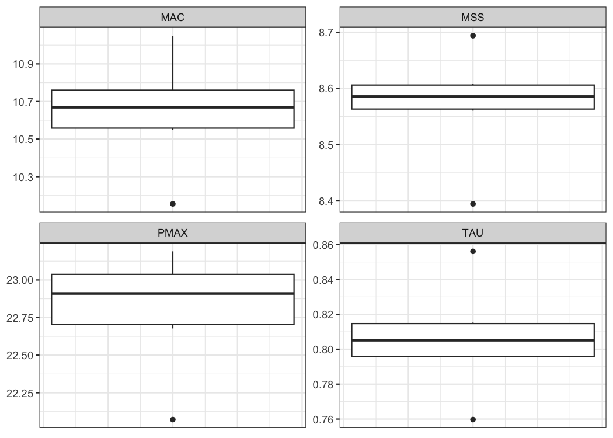

This package creates short sprint (<6sec) profiles using the split times, or the radar gun data. Mono-exponential equation is used to estimate maximal sprinting speed (MSS), relative acceleration (TAU), and other parameters. These parameters can be used to predict kinematic and kinetics variables and to compare individuals.
Installation
# Install from CRAN
install.packages("shorts")
# Or the development version from GitHub
# install.packages("remotes")
remotes::install_github("mladenjovanovic/shorts")Examples
{shorts} comes with two sample data sets: split_times and radar_gun_data with N=5 athletes. Let’s load them both:
Profiling using split times
To model sprint performance using split times, distance will be used as predictor and time as target. Since split_times contains data for multiple athletes, let’s extract only one athlete and model it using shorts::model_distance_time() function.
| athlete | bodyweight | distance | time |
|---|---|---|---|
| Kimberley | 55 | 5 | 1.158 |
| Kimberley | 55 | 10 | 1.893 |
| Kimberley | 55 | 15 | 2.541 |
| Kimberley | 55 | 20 | 3.149 |
| Kimberley | 55 | 30 | 4.313 |
| Kimberley | 55 | 40 | 5.444 |
shorts::model_distance_time() returns an object with data, model_info, model (returned from minpack.lm::nlsLM() function), parameters, corrections, predictions, model_fit and CV elements. Parameters estimated using mono-exponential equation are maximal sprinting speed (MSS), and relative acceleration (TAU). Additional parameters computed from MSS and TAU are maximal acceleration (MAC) and maximal relative power (PMAX) (which is calculated as MAC*MSS/4).
kimberley_profile <- shorts::model_distance_time(
distance = kimberley_data$distance,
time = kimberley_data$time
)
kimberley_profile
#> Estimated model parameters
#> --------------------------
#> MSS TAU MAC PMAX
#> 8.5911430 0.8113285 10.5889820 22.7428645
#>
#> Model fit estimators
#> --------------------
#> R2 meanErr meanErr_perc minErr minErr_perc
#> 0.99965531 -0.00309334 -0.53860253 -0.05293456 -4.57120551
#> maxErr maxErr_perc maxAbsErr maxAbsErr_perc RMSE
#> 0.02699162 0.85714883 0.05293456 4.57120551 0.02778875
#> RMSE_perc MAE MAE_perc
#> 1.93921846 0.02333341 1.19263265
summary(kimberley_profile)
#>
#> Formula: time ~ TAU * I(LambertW::W(-exp(1)^(-distance/(MSS * TAU) - 1))) +
#> distance/MSS + TAU
#>
#> Parameters:
#> Estimate Std. Error t value Pr(>|t|)
#> MSS 8.59114 0.12251 70.13 2.48e-07 ***
#> TAU 0.81133 0.04581 17.71 5.97e-05 ***
#> ---
#> Signif. codes: 0 '***' 0.001 '**' 0.01 '*' 0.05 '.' 0.1 ' ' 1
#>
#> Residual standard error: 0.03403 on 4 degrees of freedom
#>
#> Number of iterations to convergence: 5
#> Achieved convergence tolerance: 1.49e-08
coef(kimberley_profile)
#> MSS TAU MAC PMAX
#> 8.5911430 0.8113285 10.5889820 22.7428645To return the predicted outcome (in this case time variable), use predict() function:
predict(kimberley_profile)
#> [1] 1.210935 1.897021 2.521028 3.122008 4.299243 5.466324To create a simple plot of the model residuals, use S3 plot() method:

If you are interested in calculating average split velocity, use shorts::format_splits()
kable(shorts::format_splits(
distance = kimberley_data$distance,
time = kimberley_data$time
))| split | split_distance_start | split_distance_stop | split_distance | split_time_start | split_time_stop | split_time | split_mean_velocity | split_mean_acceleration |
|---|---|---|---|---|---|---|---|---|
| 1 | 0 | 5 | 5 | 0 | 1.158 | 1.158 | 4.317789…. | 3.728660…. |
| 2 | 5 | 10 | 5 | 1.158 | 1.893 | 0.735 | 6.802721…. | 3.380859…. |
| 3 | 10 | 15 | 5 | 1.893 | 2.541 | 0.648 | 7.716049…. | 1.409457…. |
| 4 | 15 | 20 | 5 | 2.541 | 3.149 | 0.608 | 8.223684…. | 0.834925…. |
| 5 | 20 | 30 | 10 | 3.149 | 4.313 | 1.164 | 8.591065…. | 0.315619…. |
| 6 | 30 | 40 | 10 | 4.313 | 5.444 | 1.131 | 8.841732…. | 0.221633…. |
To plot predicted velocity, acceleration, air resistance, force, and power over distance, use shorts:predict_XXX(). Please note that to calculate force, air resistance, and power, we need Kimberley’s bodymass and height (as well as other characteristics such as air pressure, temperature and wind - see get_air_resistance() function).
kimberley_bodymass <- 60 # in kilograms
kimberley_bodyheight <- 1.7 # in meters
kimberley_pred <- tibble(
distance = seq(0, 40, length.out = 1000),
# Velocity
pred_velocity = shorts::predict_velocity_at_distance(
distance,
kimberley_profile$parameters$MSS,
kimberley_profile$parameters$TAU
),
# Acceleration
pred_acceleration = shorts::predict_acceleration_at_distance(
distance,
kimberley_profile$parameters$MSS,
kimberley_profile$parameters$TAU
),
# Air resistance
pred_air_resistance = shorts::predict_air_resistance_at_distance(
distance,
kimberley_profile$parameters$MSS,
kimberley_profile$parameters$TAU,
bodymass = kimberley_bodymass,
bodyheight = kimberley_bodyheight
),
# Force
pred_force = shorts::predict_force_at_distance(
distance,
kimberley_profile$parameters$MSS,
kimberley_profile$parameters$TAU,
bodymass = kimberley_bodymass,
bodyheight = kimberley_bodyheight
),
# Power
pred_power = shorts::predict_power_at_distance(
distance,
kimberley_profile$parameters$MSS,
kimberley_profile$parameters$TAU,
bodymass = kimberley_bodymass,
bodyheight = kimberley_bodyheight
),
)
# Convert to long
kimberley_pred <- gather(kimberley_pred, "metric", "value", -distance)
ggplot(kimberley_pred, aes(x = distance, y = value)) +
theme_bw() +
geom_line() +
facet_wrap(~metric, scales = "free_y") +
xlab("Distance (m)") +
ylab(NULL)
To do prediction simpler, use shorts::predict_kinematics() function. This will provide kinetics and kinematics for 0-6s sprint using 100Hz.
predicted_kinematics <- predict_kinematics(
kimberley_profile,
bodymass = kimberley_bodymass,
bodyheight = kimberley_bodyheight
)
kable(head(predicted_kinematics))| time | distance | velocity | acceleration | bodymass | inertia | resistance | air_resistance | horizontal_force | horizontal_force_relative | vertical_force | resultant_force | resultant_force_relative | power | power_relative | work | average_power | average_power_relative | RF | force_angle |
|---|---|---|---|---|---|---|---|---|---|---|---|---|---|---|---|---|---|---|---|
| 0.00 | 0.0000000 | 0.0000000 | 10.588982 | 60 | 0 | 0 | 0.0000000 | 635.3389 | 10.588982 | 588.6 | 866.0863 | 14.43477 | 0.00000 | 0.000000 | 0.0000000 | NaN | NaN | 0.7335746 | 42.81309 |
| 0.01 | 0.0005273 | 0.1052399 | 10.459269 | 60 | 0 | 0 | 0.0026620 | 627.5588 | 10.459313 | 588.6 | 860.3953 | 14.33992 | 66.04424 | 1.100737 | 0.3322639 | 33.22639 | 0.5537732 | 0.7293843 | 43.16520 |
| 0.02 | 0.0021005 | 0.2091907 | 10.331145 | 60 | 0 | 0 | 0.0105181 | 619.8792 | 10.331320 | 588.6 | 854.8100 | 14.24683 | 129.67295 | 2.161216 | 1.3128332 | 65.64166 | 1.0940277 | 0.7251660 | 43.51734 |
| 0.03 | 0.0047068 | 0.3118680 | 10.204590 | 60 | 0 | 0 | 0.0233774 | 612.2988 | 10.204980 | 588.6 | 849.3290 | 14.15548 | 190.95643 | 3.182607 | 2.9179057 | 97.26352 | 1.6210587 | 0.7209206 | 43.86946 |
| 0.04 | 0.0083337 | 0.4132876 | 10.079586 | 60 | 0 | 0 | 0.0410543 | 604.8162 | 10.080270 | 588.6 | 843.9506 | 14.06584 | 249.96306 | 4.166051 | 5.1243725 | 128.10931 | 2.1351552 | 0.7166488 | 44.22151 |
| 0.05 | 0.0129685 | 0.5134649 | 9.956113 | 60 | 0 | 0 | 0.0633688 | 597.4301 | 9.957169 | 588.6 | 838.6732 | 13.97789 | 306.75938 | 5.112656 | 7.9097994 | 158.19599 | 2.6365998 | 0.7123515 | 44.57343 |
To get model residuals, use residuals() function:
residuals(kimberley_profile)
#> [1] -0.052934560 -0.004021206 0.019971712 0.026991617 0.013756878
#> [6] -0.022324483Package {shorts} comes with find_XXX() family of functions that allow finding peak power and it’s location, as well as critical distance over which velocity, acceleration, or power drops below certain threshold:
# Peak power and location
shorts::find_peak_power_distance(
MSS = kimberley_profile$parameters$MSS,
MAC = kimberley_profile$parameters$MAC,
bodymass = kimberley_bodymass,
bodyheight = kimberley_bodyheight
)
#> $peak_power
#> [1] 1384.248
#>
#> $distance
#> [1] 1.424183
# Distance over which power is over 80%
shorts::find_power_critical_distance(
MSS = kimberley_profile$parameters$MSS,
MAC = kimberley_profile$parameters$MAC,
bodymass = kimberley_bodymass,
bodyheight = kimberley_bodyheight,
percent = 0.8
)
#> $lower
#> [1] 0.3421958
#>
#> $upper
#> [1] 4.26947
# Distance over which acceleration is under 50%
shorts::find_acceleration_critical_distance(
MSS = kimberley_profile$parameters$MSS,
MAC = kimberley_profile$parameters$MAC,
percent = 0.5
)
#> [1] 1.34628
# Distance over which velocity is over 95%
shorts::find_velocity_critical_distance(
MSS = kimberley_profile$parameters$MSS,
MAC = kimberley_profile$parameters$MAC,
percent = 0.95
)
#> [1] 14.25923Profiling using radar gun data
The radar gun data is modeled using measured velocity as target variable and time as predictor. Individual analysis is performed using shorts::model_time_velocity() function. Let’s do analysis for Jim:
jim_data <- filter(radar_gun_data, athlete == "Jim")
jim_profile <- shorts::model_time_velocity(
time = jim_data$time,
velocity = jim_data$velocity
)
jim_profile
#> Estimated model parameters
#> --------------------------
#> MSS TAU MAC PMAX
#> 7.9979330 0.8886594 8.9999980 17.9953454
#>
#> Model fit estimators
#> --------------------
#> R2 meanErr meanErr_perc minErr minErr_perc
#> 9.992441e-01 3.477904e-05 NaN -1.641583e-01 NaN
#> maxErr maxErr_perc maxAbsErr maxAbsErr_perc RMSE
#> 1.509921e-01 NaN 1.641583e-01 NaN 5.050288e-02
#> RMSE_perc MAE MAE_perc
#> NaN 3.927901e-02 NaN
summary(jim_profile)
#>
#> Formula: velocity ~ MSS * (1 - exp(1)^(-(time)/TAU))
#>
#> Parameters:
#> Estimate Std. Error t value Pr(>|t|)
#> MSS 7.997933 0.003069 2606.3 <2e-16 ***
#> TAU 0.888659 0.001564 568.2 <2e-16 ***
#> ---
#> Signif. codes: 0 '***' 0.001 '**' 0.01 '*' 0.05 '.' 0.1 ' ' 1
#>
#> Residual standard error: 0.05059 on 598 degrees of freedom
#>
#> Number of iterations to convergence: 4
#> Achieved convergence tolerance: 1.49e-08
plot(jim_profile) +
theme_bw()
The object returned from shorts::model_time_velocity() is same as object returned from shorts::model_distance_time(). Let’s plot Jim’s measured velocity and predicted velocity:
ggplot(
data.frame(jim_profile$predictions),
aes(x = .predictor)) +
theme_bw() +
geom_line(aes(y = .observed), alpha = 0.5) +
geom_line(aes(y = .predicted), color = "red", alpha = 0.5) +
xlab("Time (s)") +
ylab("Velocity (m/s)")
Rather than estimating MSS, shorts::model_time_velocity() function allows you to utilize peak velocity observed in the data as MSS. This is done by setting the use_observed_MSS parameter to TRUE:
jim_profile <- shorts::model_time_velocity(
time = jim_data$time,
velocity = jim_data$velocity,
use_observed_MSS = TRUE
)
jim_profile
#> Estimated model parameters
#> --------------------------
#> MSS TAU MAC PMAX
#> 8.0950000 0.9214116 8.7854331 17.7795203
#>
#> Model fit estimators
#> --------------------
#> R2 meanErr meanErr_perc minErr minErr_perc
#> 0.99897228 -0.03894491 NaN -0.23198694 NaN
#> maxErr maxErr_perc maxAbsErr maxAbsErr_perc RMSE
#> 0.17096935 NaN 0.23198694 NaN 0.08206081
#> RMSE_perc MAE MAE_perc
#> NaN 0.06661935 NaN
summary(jim_profile)
#>
#> Formula: velocity ~ MSS * (1 - exp(1)^(-(time)/TAU))
#>
#> Parameters:
#> Estimate Std. Error t value Pr(>|t|)
#> MSS 8.095000 0.005089 1590.6 <2e-16 ***
#> TAU 0.921412 0.002596 354.9 <2e-16 ***
#> ---
#> Signif. codes: 0 '***' 0.001 '**' 0.01 '*' 0.05 '.' 0.1 ' ' 1
#>
#> Residual standard error: 0.0822 on 598 degrees of freedom
#>
#> Number of iterations to convergence: 4
#> Achieved convergence tolerance: 1.49e-08Profiling using tether devices
Some tether devices provide data out in a velocity-at-distance format. In this case, velocity is the outcome variable and distance is the predictor. To estimate sprint profiles from tether data, use shorts::model_distance_velocity() function:
distance <- c(5, 10, 20, 30, 40)
velocity <- predict_velocity_at_distance(distance, MSS = 10, MAC = 8)
m1 <- model_distance_velocity(distance = distance, velocity = velocity)
df <- data.frame(
distance = distance,
obs_velocity = velocity
)
ggplot(
data.frame(m1$predictions),
aes(x = .predictor)) +
theme_bw() +
geom_point(aes(y = .observed), alpha = 0.5) +
geom_line(aes(y = .predicted), color = "red", alpha = 0.5) +
xlab("Distance (m)") +
ylab("Velocity (m/s)")Setting use_observed_MSS parameter to TRUE in the shorts::model_distance_velocity() function also allows you to use observed peak velocity as MSS.
In the case when distance is not centered at zero, use shorts::model_distance_velocity_DC() which also estimated the distance correction (DC) parameter, serving as model intercept (for more info see Using corrections section):
distance <- c(5, 10, 20, 30, 40)
velocity <- predict_velocity_at_distance(distance - 0.5, MSS = 10, MAC = 8)
m1 <- model_distance_velocity_DC(distance = distance, velocity = velocity)
m1
#> Estimated model parameters
#> --------------------------
#> MSS TAU MAC PMAX
#> 10.00 1.25 8.00 20.00
#>
#> Estimated model corrections
#> --------------------------
#> DC
#> -0.5
#>
#> Model fit estimators
#> --------------------
#> R2 meanErr meanErr_perc minErr minErr_perc
#> 1.000000e+00 7.105427e-16 8.773026e-15 0.000000e+00 0.000000e+00
#> maxErr maxErr_perc maxAbsErr maxAbsErr_perc RMSE
#> 1.776357e-15 1.842711e-14 1.776357e-15 1.842711e-14 9.729507e-16
#> RMSE_perc MAE MAE_perc
#> 1.155185e-14 7.105427e-16 8.773026e-15Force-Velocity Profiling
To estimate Force-Velocity Profile (FVP) using approach by Samozino et al. (2016, 2022) use shorts::create_FVP():
kimberley_fv <- shorts::create_FVP(
MSS = kimberley_profile$parameters$MSS,
MAC = kimberley_profile$parameters$MAC,
# These are needed to estimate air resistance
bodymass = kimberley_bodymass,
bodyheight = kimberley_bodyheight
)
kimberley_fv
#> $bodymass
#> [1] 60
#>
#> $F0
#> [1] 635.3389
#>
#> $F0_rel
#> [1] 10.58898
#>
#> $V0
#> [1] 8.845438
#>
#> $Pmax
#> [1] 1404.963
#>
#> $Pmax_rel
#> [1] 23.41605
#>
#> $FV_slope
#> [1] -1.197112To convert back to Acceleration-Velocity Profile (AVP), use:
kimberley_avp <- shorts::convert_FVP(
F0 = kimberley_fv$F0,
V0 = kimberley_fv$V0,
bodymass = kimberley_bodymass,
bodyheight = kimberley_bodyheight
)
kimberley_avp
#> $MSS
#> [1] 8.591143
#>
#> $MAC
#> [1] 10.58898Using external load
{shorts} package also allows utilizing external load in estimating FVP, as well as using FVP parameters to predict kinematic and kinetic variables. External load is represented either with additional inertia (i.e., weight vest), horizontal resistance (i.e., tether device that create additional resistance or help, or a hill sprinting), or both (i.e., a sled, which have both inertia and resistance due to friction forces). One might also consider head and tail wind as a form of resistance (or assistance).
Let’s see how theoretical model, assuming FVP is determinant of performance (which I do not agree with, BTW), predicts changes in sprint characteristics (i.e., MSS and MAC) under different external load conditions and magnitudes using Kimberley’s estimated FVP:
loads_df <- rbind(
tibble(type = "Weight vest", magnitude = seq(0, 20, length.out = 100), inertia = magnitude, resistance = 0),
tibble(type = "Tether", magnitude = seq(-50, 200, length.out = 100), inertia = 0, resistance = magnitude),
tibble(type = "Sled", magnitude = seq(0, 40, length.out = 100), inertia = magnitude, resistance = magnitude * 9.81 * 0.4)
) %>%
mutate(
data.frame(shorts::convert_FVP(
F0 = kimberley_fv$F0,
V0 = kimberley_fv$V0,
bodymass = kimberley_bodymass,
bodyheight = kimberley_bodyheight,
inertia = inertia,
resistance = resistance
))
)
loads_df %>%
pivot_longer(cols = c(MSS, MAC), names_to = "parameter") %>%
ggplot(aes(x = magnitude, y = value, color = parameter)) +
theme_bw() +
geom_vline(xintercept = 0, linetype = "dotted") +
geom_line() +
facet_wrap(~type, scales = "free_x") +
ylab(NULL)
Following figure depicts the effect on split times under different load types and magnitudes, assuming FVP to be determinant of performance (i.e., causal mechanism):
dist_df <- expand_grid(
loads_df,
distance = c(5, 10, 20, 30, 40)
) %>%
mutate(
time = predict_time_at_distance(distance, MSS, MAC),
distance = factor(
paste0(distance, "m"), levels = c("5m", "10m", "20m", "30m", "40m"))
)
dist_df %>%
ggplot(aes(x = magnitude, y = time, color = distance)) +
theme_bw() +
geom_vline(xintercept = 0, linetype = "dotted") +
geom_line() +
facet_wrap(~type, scales = "free_x") +
ylab("Time (s)")
One can use external resistance when predicting force or power:
shorts::predict_force_at_time(
time = 0.5,
MSS = 9,
MAC = 7,
bodymass = 75,
inertia = 20,
resistance = 50)
#> [1] 503.0126
shorts::predict_power_at_time(
time = 0.5,
MSS = 9,
MAC = 7,
bodymass = 75,
inertia = 20,
resistance = 50)
#> [1] 1458.593
shorts::predict_time_at_distance_FV(
distance = 10,
F0 = 750,
V0 = 8,
bodymass = 75,
inertia = 20,
resistance = 50)
#> [1] 2.259444External resistances can also be utilized in the Optimization functions, covered later.
Using corrections
You have probably noticed that estimated MSS and TAU were a bit too high for splits data. Biased estimates are due to differences in starting positions and timing triggering methods for certain measurement approaches (e.g. starting behind first timing gate, or allowing for body rocking).
Here I will provide quick summary. Often, this bias in estimates is dealt with by using heuristic rule of thumb of adding time correction (time_correction) to split times (e.g. from 0.3-0.5sec; see more in Haugen et al., 2012). To do this, just add time correction to time split:
kimberley_profile_fixed_TC <- shorts::model_distance_time(
distance = kimberley_data$distance,
time = kimberley_data$time + 0.3
)
kimberley_profile_fixed_TC
#> Estimated model parameters
#> --------------------------
#> MSS TAU MAC PMAX
#> 9.127769 1.377624 6.625731 15.119536
#>
#> Model fit estimators
#> --------------------
#> R2 meanErr meanErr_perc minErr minErr_perc
#> 0.999971375 0.001009227 0.125589831 -0.007689947 -0.222961649
#> maxErr maxErr_perc maxAbsErr maxAbsErr_perc RMSE
#> 0.016398636 1.124735002 0.016398636 1.124735002 0.008139867
#> RMSE_perc MAE MAE_perc
#> 0.477039249 0.006393853 0.285701748
summary(kimberley_profile_fixed_TC)
#>
#> Formula: time ~ TAU * I(LambertW::W(-exp(1)^(-distance/(MSS * TAU) - 1))) +
#> distance/MSS + TAU
#>
#> Parameters:
#> Estimate Std. Error t value Pr(>|t|)
#> MSS 9.12777 0.05355 170.44 7.11e-09 ***
#> TAU 1.37762 0.02131 64.66 3.43e-07 ***
#> ---
#> Signif. codes: 0 '***' 0.001 '**' 0.01 '*' 0.05 '.' 0.1 ' ' 1
#>
#> Residual standard error: 0.009969 on 4 degrees of freedom
#>
#> Number of iterations to convergence: 5
#> Achieved convergence tolerance: 1.49e-08
coef(kimberley_profile_fixed_TC)
#> MSS TAU MAC PMAX
#> 9.127769 1.377624 6.625731 15.119536Instead of providing for TC, this parameter can be estimated using shorts::model_distance_time_TC().
kimberley_profile_TC <- shorts::model_distance_time_TC(
distance = kimberley_data$distance,
time = kimberley_data$time
)
kimberley_profile_TC
#> Estimated model parameters
#> --------------------------
#> MSS TAU MAC PMAX
#> 8.974835 1.234857 7.267917 16.307090
#>
#> Estimated model corrections
#> --------------------------
#> TC
#> -0.2346537
#>
#> Model fit estimators
#> --------------------
#> R2 meanErr meanErr_perc minErr minErr_perc
#> 9.999997e-01 1.696769e-11 1.816277e-03 -1.180735e-03 -6.237372e-02
#> maxErr maxErr_perc maxAbsErr maxAbsErr_perc RMSE
#> 1.209466e-03 5.974775e-02 1.209466e-03 6.237372e-02 7.983565e-04
#> RMSE_perc MAE MAE_perc
#> 3.748225e-02 6.586034e-04 2.823533e-02Instead of estimating TC, {shorts} package features a method of estimating flying start distance (FD):
kimberley_profile_FD <- shorts::model_distance_time_FD(
distance = kimberley_data$distance,
time = kimberley_data$time
)
kimberley_profile_FD
#> Estimated model parameters
#> --------------------------
#> MSS TAU MAC PMAX
#> 9.002681 1.287701 6.991283 15.735073
#>
#> Estimated model corrections
#> --------------------------
#> FD
#> 0.3015635
#>
#> Model fit estimators
#> --------------------
#> R2 meanErr meanErr_perc minErr minErr_perc
#> 1.000000e+00 6.447913e-07 3.182714e-04 -4.036159e-04 -1.281727e-02
#> maxErr maxErr_perc maxAbsErr maxAbsErr_perc RMSE
#> 4.557031e-04 1.056580e-02 4.557031e-04 1.281727e-02 2.758661e-04
#> RMSE_perc MAE MAE_perc
#> 8.402643e-03 2.367539e-04 7.829109e-03If you want to use fixed FD parameter (e.g., when you know what is the flying distance), in a similar vein of using fixed TC correction, use:
kimberley_profile_fixed_FD <- shorts::model_distance_time_FD(
distance = kimberley_data$distance,
time = kimberley_data$time,
FD = 0.5
)
kimberley_profile_fixed_FD
#> Estimated model parameters
#> --------------------------
#> MSS TAU MAC PMAX
#> 9.178464 1.472935 6.231413 14.298700
#>
#> Estimated model corrections
#> --------------------------
#> FD
#> 0.5
#>
#> Model fit estimators
#> --------------------
#> R2 meanErr meanErr_perc minErr minErr_perc
#> 0.999973897 0.001247560 0.177401430 -0.007903690 -0.250990459
#> maxErr maxErr_perc maxAbsErr maxAbsErr_perc RMSE
#> 0.015461987 1.335232014 0.015461987 1.335232014 0.007939415
#> RMSE_perc MAE MAE_perc
#> 0.564926535 0.006718969 0.349905006Cross-Validation (CV)
model_ family of functions come with CV feature that is performed by setting the function parameter CV to desired number of folds. This feature is very useful for checking model parameters robustness and model predictions on unseen data. Let’s use Kimberley again, but this time perform special kind of CV, leave-one-out-cross-validation (LOOCV):
kimberley_profile_CV <- shorts::model_distance_time(
distance = kimberley_data$distance,
time = kimberley_data$time,
# To perform LOOCV number of folds is equal to
# number of observatins
CV = nrow(kimberley_data)
)
kimberley_profile_CV
#> Estimated model parameters
#> --------------------------
#> MSS TAU MAC PMAX
#> 8.5911430 0.8113285 10.5889820 22.7428645
#>
#> Model fit estimators
#> --------------------
#> R2 meanErr meanErr_perc minErr minErr_perc
#> 0.99965531 -0.00309334 -0.53860253 -0.05293456 -4.57120551
#> maxErr maxErr_perc maxAbsErr maxAbsErr_perc RMSE
#> 0.02699162 0.85714883 0.05293456 4.57120551 0.02778875
#> RMSE_perc MAE MAE_perc
#> 1.93921846 0.02333341 1.19263265
#>
#>
#> Cross-Validation
#> ------------------------------
#> Parameters:
#> .fold MSS TAU MAC PMAX
#> 1 1 8.571600 0.7972998 10.75079 23.03786
#> 2 2 8.693800 0.8561005 10.15512 22.07163
#> 3 3 8.608052 0.8130141 10.58783 22.78514
#> 4 4 8.560667 0.7953648 10.76319 23.03503
#> 5 5 8.599599 0.8152661 10.54821 22.67760
#> 6 6 8.394674 0.7596924 11.05010 23.19049
#>
#> Testing model fit estimators (overall):
#> R2 meanErr meanErr_perc minErr minErr_perc
#> 0.99901083 -0.01236576 -0.85484631 -0.08009035 -5.96012094
#> maxErr maxErr_perc maxAbsErr maxAbsErr_perc RMSE
#> 0.03444978 1.09399115 0.08009035 5.96012094 0.04742765
#> RMSE_perc MAE MAE_perc
#> 2.59202757 0.03923868 1.72270384Radar gun data often comes with much more observations, thus we can set smaller CV parameter:
jim_profile_CV <- shorts::model_time_velocity(
time = jim_data$time,
velocity = jim_data$velocity,
CV = 10
)
jim_profile_CV
#> Estimated model parameters
#> --------------------------
#> MSS TAU MAC PMAX
#> 7.9979330 0.8886594 8.9999980 17.9953454
#>
#> Model fit estimators
#> --------------------
#> R2 meanErr meanErr_perc minErr minErr_perc
#> 9.992441e-01 3.477904e-05 NaN -1.641583e-01 NaN
#> maxErr maxErr_perc maxAbsErr maxAbsErr_perc RMSE
#> 1.509921e-01 NaN 1.641583e-01 NaN 5.050288e-02
#> RMSE_perc MAE MAE_perc
#> NaN 3.927901e-02 NaN
#>
#>
#> Cross-Validation
#> ------------------------------
#> Parameters:
#> .fold MSS TAU MAC PMAX
#> 1 1 7.996399 0.8880866 9.004076 18.00005
#> 2 2 7.997571 0.8891461 8.994664 17.98387
#> 3 3 7.998105 0.8883944 9.002877 18.00149
#> 4 4 7.997853 0.8889699 8.996764 17.98870
#> 5 5 7.998398 0.8887804 8.999296 17.99499
#> 6 6 7.997188 0.8886426 8.999329 17.99233
#> 7 7 7.998404 0.8888255 8.998846 17.99410
#> 8 8 7.998882 0.8884959 9.002723 18.00293
#> 9 9 7.997712 0.8886269 9.000079 17.99501
#> 10 10 7.998824 0.8886162 9.001438 18.00023
#>
#> Testing model fit estimators (overall):
#> R2 meanErr meanErr_perc minErr minErr_perc
#> 9.992411e-01 1.783954e-05 NaN -1.643231e-01 NaN
#> maxErr maxErr_perc maxAbsErr maxAbsErr_perc RMSE
#> 1.527111e-01 NaN 1.643231e-01 NaN 5.060322e-02
#> RMSE_perc MAE MAE_perc
#> NaN 3.936831e-02 NaNOptimization
Using the method outlined in Samozino et al (2022), one can find the optimal profiles, as well as the profile imbalance (compared to the optimal), for both sprint profiles (i.e., MSS and MAC) and Force-Velocity (FV). In addition to this, one can probe the profiles (i.e., increase V0/F0 or MSS/MAC for say 2.5% to check which improvement yield more improvement in sprint time). The following graph depicts estimate profile imbalances. Note that >100% is velocity deficit (i.e., increasing velocity; MSS or V0; will yield more improvement in sprint times), while <100% is force deficit.
MSS <- 10
MAC <- 8
bodymass <- 75
fv <- create_FVP(MSS, MAC, bodymass)
opt_df <- tibble(
dist = seq(5, 50, by = 5)
) %>%
mutate(
`Sprint Profile` = optimal_MSS_MAC(
distance = dist,
MSS,
MAC
)[["profile_imb"]],
`FV Profile` = optimal_FV(
distance = dist,
fv$F0,
fv$V0,
bodymass
)[["profile_imb"]],
`FV Profile (PeakPower)` = optimal_FV(
distance = dist,
fv$F0,
fv$V0,
bodymass,
method = "peak"
)[["profile_imb"]],
`Probe FV` = probe_FV(
distance = dist,
fv$F0,
fv$V0,
bodymass
)[["profile_imb"]],
`Probe MSS/MAC` = probe_MSS_MAC(
distance = dist,
MSS,
MAC
)[["profile_imb"]]
) %>%
pivot_longer(-dist, names_to = "profile")
opt_dist <- tibble(
`Sprint Profile` = find_optimal_distance(
MSS,
MAC,
optimal_func = optimal_MSS_MAC
),
`FV Profile` = find_optimal_distance(
fv$F0,
fv$V0,
bodymass,
optimal_func = optimal_FV
),
`FV Profile (PeakPower)` = find_optimal_distance(
fv$F0,
fv$V0,
bodymass,
optimal_func = optimal_FV,
method = "peak"
),
`Probe FV` = find_optimal_distance(
fv$F0,
fv$V0,
bodymass,
optimal_func = probe_FV
),
`Probe MSS/MAC` = find_optimal_distance(
MSS,
MAC,
optimal_func = probe_MSS_MAC
)
) %>%
pivot_longer(cols = 1:5, names_to = "profile")
ggplot(opt_df, aes(x = dist, y = value, color = profile)) +
theme_bw() +
geom_hline(yintercept = 100, linetype = "dashed", alpha = 0.6) +
geom_line() +
geom_point(data = opt_dist, aes(x = value, y = 100), size = 2) +
xlab("Distance (m)") +
ylab("Profile imbalance")
Publications
Jovanović, M., Vescovi, J.D. (2022). {shorts}: An R Package for Modeling Short Sprints. International Journal of Strength and Conditioning, 2(1). https://doi.org/10.47206/ijsc.v2i1.74
Jovanović M. (2023). Bias in estimated short sprint profiles using timing gates due to the flying start: simulation study and proposed solutions. Computer Methods in Biomechanics and Biomedical Engineering:1–11. https://doi.org/10.1080/10255842.2023.2170713
Vescovi, JD and Jovanović, M. (2021). Sprint Mechanical Characteristics of Female Soccer Players: A Retrospective Pilot Study to Examine a Novel Approach for Correction of Timing Gate Starts. Front Sports Act Living 3: 629694, 2021. https://doi.org/10.3389/fspor.2021.629694
Citation
To cite {shorts}, please use the following command to get the BibTex entry:
citation("shorts")References
Please refer to these publications for more information on short sprints modeling using mono-exponential equation:
Chelly SM, Denis C. 2001. Leg power and hopping stiffness: relationship with sprint running performance: Medicine and Science in Sports and Exercise:326–333. DOI: 10.1097/00005768-200102000-00024.
Clark KP, Rieger RH, Bruno RF, Stearne DJ. 2017. The NFL Combine 40-Yard Dash: How Important is Maximum Velocity? Journal of Strength and Conditioning Research:1. DOI: 10.1519/JSC.0000000000002081.
Furusawa K, Hill AV, and Parkinson JL. The dynamics of” sprint” running. Proceedings of the Royal Society of London. Series B, Containing Papers of a Biological Character 102 (713): 29-42, 1927
Greene PR. 1986. Predicting sprint dynamics from maximum-velocity measurements. Mathematical Biosciences 80:1–18. DOI: 10.1016/0025-5564(86)90063-5.
Haugen TA, Tønnessen E, Seiler SK. 2012. The Difference Is in the Start: Impact of Timing and Start Procedure on Sprint Running Performance: Journal of Strength and Conditioning Research 26:473–479. DOI: 10.1519/JSC.0b013e318226030b.
Samozino P, Rabita G, Dorel S, Slawinski J, Peyrot N, Saez de Villarreal E, Morin J-B. 2016. A simple method for measuring power, force, velocity properties, and mechanical effectiveness in sprint running: Simple method to compute sprint mechanics. Scandinavian Journal of Medicine & Science in Sports 26:648–658. DOI: 10.1111/sms.12490.
Samozino P. 2018. A Simple Method for Measuring Force, Velocity and Power Capabilities and Mechanical Effectiveness During Sprint Running. In: Morin J-B, Samozino P eds. Biomechanics of Training and Testing. Cham: Springer International Publishing, 237–267. DOI: 10.1007/978-3-319-05633-3_11.
Samozino P, Peyrot N, Edouard P, Nagahara R, Jimenez‐Reyes P, Vanwanseele B, Morin J. 2022. Optimal mechanical force‐velocity profile for sprint acceleration performance.Scandinavian Journal of Medicine & Science in Sports 32:559–575. DOI: 10.1111/sms.14097.